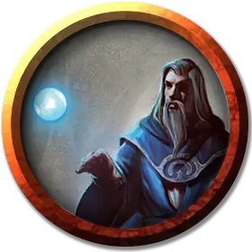

Оградитель
Abjurer
Средний Гуманоид (Любая раса), любое мировоззрение

Класс Доспеха 12 (15 с доспехами мага)
Хиты 84 (13к8 + 26)
Скорость 30 футов
| мод | спас | ||
|---|---|---|---|
| СИЛ | 9 | −1 | −1 |
| ЛОВ | 14 | +2 | +2 |
| ТЕЛ | 14 | +2 | +2 |
| мод | спас | ||
|---|---|---|---|
| ИНТ | 18 | +4 | +8 |
| МДР | 12 | +1 | +5 |
| ХАР | 11 | +0 | +0 |
Навыки История +8, Магия +8
Чувства пассивное Восприятие 11
Опасность 9 (5000 опыта)
Бонус мастерства +4
Среда обитания Город
Особенности
Языки. Любые четыре языка.
Использование заклинаний. Оградитель является заклинателем 13-го уровня. Его базовой характеристикой является Интеллект (Сл спасброска от заклинания 16, +8 к попаданию атаками заклинаниями). У оградителя подготовлены следующие заклинания волшебника:
• Заговоры (неограниченно): защита от оружия [blade ward], пляшущие огоньки [dancing lights], починка [mending], сообщение [message], луч холода [ray of frost].
• 1 уровень (4 ячейки): сигнал тревоги [alarm], доспехи мага [mage armor], волшебная стрела [magic missile], щит [shield]*.
• 2 уровень (3 ячейки): волшебный замок [arcane lock],* невидимость [invisibility].
• 3 уровень (3 ячейки): контрзаклинание [counterspell], рассеивание магии [dispel magic], огненный шар [fireball].
• 4 уровень (3 ячейки): изгнание [banishment], каменная кожа [stoneskin].
• 5 уровень (2 ячейки): конус холода [cone of cold], силовая стена [wall of force].
• 6 уровень. (1 ячейка): окаменение [flesh to stone], сфера неуязвимости [globe of invulnerability]*.
• 7 уровень (1 ячейка): знак [symbol],* телепортация [teleport].
*Заклинание Ограждения уровня 1 или выше.
Магическая защита. У оградителя есть магическая защита, у которой есть 30 хитов. Всякий раз, когда оградитель получает урон, защита получает урон вместо него. Если хиты защиты падают до 0, оградитель получает оставшийся урон. Когда оградитель накладывает заклинание ограждения 1–го уровня или выше, защита восстанавливает хиты, равные удвоенному уровню заклинания.
Действия
Боевой посох. Рукопашная атака оружием: +3 к попаданию, досягаемость 5 футов, одна цель. Попадание: Дробящий урон 2 (1к6 – 1) или дробящий урон 3 (1к8–1) если используется двумя руками.
Описание
Оградители – специализированные волшебники, которые чувствуют себя в безопасными когда прикрыты слоями волшебной силы. Короли, знать и другие богатые люди обычно нанимают оградителей, чтобы наложить защитные заклинания на свои дома и хранилища.